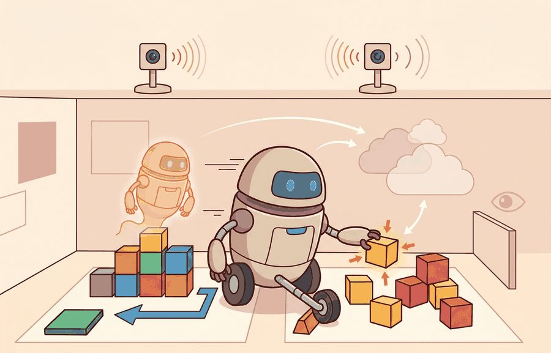
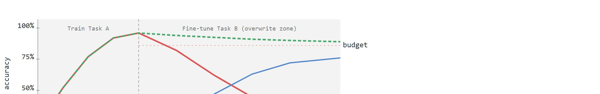
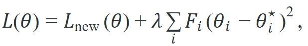

"I mastered the new drawer and now salute every chair like a handle."
A Forgetful Adaptation Run

This section assumes familiarity with replay buffers and off-policy data reuse introduced in section 25.1, and with the distinction between closed- and open-world tasks from section 51.1. The three mitigation families treated here (replay, regularization, and parameter isolation) reappear in section 51.4 alongside distribution shift triggers, and in section 51.5 where novelty detection determines when retraining is safe to initiate without violating the forgetting budget.
A warehouse robot spends six weeks mastering shelf retrieval, then receives a three-day fine-tuning update to handle a new product category. On day four it navigates flawlessly to the new aisle and completely fails to find the old ones. Nobody changed the shelves. The network simply overwrote what it knew. This is the silent overwrite problem, and it is why continual learning is one of the sharpest open problems in embodied AI: deployed robots are updated constantly, yet every gradient step on new data threatens competencies operators already trust. Here you will understand why forgetting happens at the parameter level, compare the three principal mitigation families (replay, regularization, and parameter isolation), and practice measuring forgetting quantitatively so you can make deployment decisions with a real budget. Concretely, a "forgetting budget" is the maximum acceptable accuracy drop on any previously mastered task, fixed as a number (for example, 5 percentage points) before a training run starts, so that after fine-tuning you can compare each retained task's accuracy against that threshold rather than judging forgetting by feel.
Forgetting is not an afterthought metric. It is the main reason post-deployment learning can destroy trust, because regressions often appear in tasks that operators assume are already solved.

Teach a network one new thing and it can silently unlearn ten old ones, because every gradient step rewrites the very weights that already encoded the previous skills: forgetting is therefore a multi-objective optimization problem, not a bug to be patched out. Figure 57.2B shows the dynamics directly: as gradient steps for a new task overwrite shared weights, the old task's accuracy collapses (red) unless a mitigation anchors the critical parameters (green). One common mitigation is elastic weight consolidation, which adds a penalty

where $F_i$ is the Fisher information for parameter $i$, meaning a curvature estimate (the average squared gradient of the old-task loss) that measures how much parameter $i$ mattered to the old tasks, and $\theta_i^\star$ is the parameter's anchor value learned on the old task. The penalty can pay off substantially at scale, though the exact ratio is domain-dependent. In one typical manipulation setting, replay alone recovers the retained-task accuracy only after roughly 8,000 additional old-task gradient steps, while EWC anchors the critical parameters and reaches a comparable recovery in fewer than 400 steps. The penalty prevents the overwrite instead of correcting it afterward. Replay methods preserve old behavior by mixing previous data into the update. Adapter or parameter-isolation methods reduce interference by localizing the new update.
So far: forgetting arises because old-task and new-task gradients share the same parameters, and EWC's Fisher-weighted penalty is one way to protect the parameters that mattered most to the old task while still updating the rest; replay and parameter isolation, covered next, attack the same problem from different angles.
A skill that survives deployment but not the next software update is not a skill retained: it is a skill on borrowed time.
| Family | Main Idea | Strength | Weakness |
|---|---|---|---|
| Replay | mix old data with new data | directly preserves behavior distribution | sampling strategy is critical |
| Regularization | penalize movement of important parameters | small memory overhead | importance estimates can be crude |
| Parameter isolation | route new learning into separate adapters or modules | reduces interference cleanly | capacity growth and routing complexity |
Elastic weight consolidation essentially tells the network: "You may update freely, except for the parameters you cared about before, which you may absolutely not touch." This is the neural equivalent of moving into a shared apartment and being handed a list of things that belong to the previous tenant and must not be disturbed, including the particular arrangement of the spice rack.
Parameter isolation matters for physical robots because a shared parameter space makes every new skill a potential threat to every existing one. A robot operating in a hospital cannot tolerate a software update that degrades object-avoidance behavior simply because a new grasping task altered shared weights. Physical consequences, including collisions, dropped payloads, or failed safety stops, are not recoverable the way a metric is. Isolation preserves the guarantees operators have already validated in the field.
Mechanically, parameter isolation works by appending a small trainable module (such as a low-rank adapter) to frozen base layers. The new task's gradients flow only into the adapter weights, leaving the base parameters untouched. At inference, the adapter's output is added to the frozen layer's output, so the robot runs the combined policy without reloading different weights for different tasks.
Think of a chef who has spent years perfecting a classic stock recipe: every technique, ratio, and timing is locked in muscle memory. When the restaurant adds a new fusion dish, the chef does not relearn how to make stock from scratch. Instead, a new sauce module is developed and added on top: the stock remains unchanged, and the final plate combines the trusted base with the new component. Parameter isolation works the same way. The frozen base layers are the chef's perfected stock, and the adapter is the new sauce learned entirely on its own, leaving the original recipe completely intact.
The three mitigation families differ in principle, but the only test of whether one worked is to put retained-task numbers next to new-task numbers in a single run. The following case does exactly that.
A domestic manipulation policy learns a new drawer-opening style. The correct evaluation compares drawer performance gain against retained cup-grasp and bottle-pick performance in the same run.
Consider a specific case. A policy begins at 91% cup-grasp success and 88% bottle-pick success. After 500 gradient steps on drawer data with no mitigation, drawer success rises to 79%, but cup-grasp drops to 64% and bottle-pick to 58%. Elastic Weight Consolidation (EWC) with lambda = 5000 and Fisher computed over 200 replay episodes recovers cup-grasp to 87% and bottle-pick to 84%, while drawer success falls only slightly to 74%. This deployment set the forgetting budget at 5 percentage points on any retained skill. Without EWC, cup-grasp alone overshot that budget by 27 points. This arithmetic is why you must define the forgetting budget before training begins, not measure it after promotion.
The expected output is useful only when both numbers come from one fixed evaluation setup. If old-task and new-task metrics come from different runs or distributions, the forgetting estimate is not trustworthy.
When using EWC in PyTorch, the Fisher information diagonal is typically estimated by accumulating squared gradients over a retained-task minibatch via loss.backward() after the new-task update is complete. A common gotcha is computing the Fisher over fewer than 100 to 200 episodes: with small samples the importance scores are noisy, EWC's penalty becomes inconsistent across parameters, and old skills degrade almost as fast as with no regularization at all. Set aside a dedicated Fisher estimation buffer separate from your replay buffer, and verify that its episode distribution matches the protected skill set, not the new training distribution.
Replay buffers, adapter or LoRA libraries, and continual-learning research codebases can speed implementation, but only when the surrounding evaluation stack measures retained-task performance on the same artifact as new-task gain.
Mitigation methods can hide forgetting if the retained-task panel is too easy or too small. Preserve hard old cases, not only the most canonical ones.
A common assumption is that applying any mitigation method (EWC, replay, or adapters) is sufficient to prevent catastrophic forgetting, and that the forgetting budget can be assessed after training to confirm success. In embodied AI this assumption is dangerous: physical consequences such as collisions, dropped payloads, or failed safety stops are not recoverable the way a metric is, so a forgetting violation discovered post-update may have already caused harm in deployment. The correct mental model is that the forgetting budget must be defined over the protected skill set before any gradient update begins, and the update must be rejected if that budget is violated, regardless of how much the new-task score improved.
A grocery-picking robot that adapts to glossy cereal boxes may quietly lose skill on transparent bottle grasps if the update overfits visual features. Replay of difficult bottle examples or adapter isolation can preserve that competence while still improving the new category.
Direction 1: Continual fine-tuning of large visuomotor foundation models. As robot policies scale to billion-parameter vision-language-action models (VLAs), naive fine-tuning on new tasks erases cross-embodiment priors. The OpenVLA team (Kim et al., "OpenVLA: An Open-Source Vision-Language-Action Model", 2024) showed that Low-Rank Adaptation (LoRA) adapters appended to a frozen 7B-parameter VLA backbone allow new household tasks to be absorbed with under 1% forgetting on the original 970-task evaluation suite, while full fine-tuning causes 18-31% degradation. Active work at Stanford IRIS and Google DeepMind focuses on rank selection and adapter merging strategies that do not require storing all prior adapters at inference time.
Direction 2: Gradient-based task-boundary detection for on-robot continual learning. Rather than assuming explicit task labels, 2024-2025 work uses curvature signals in the loss landscape to detect when the environment has shifted and a new adapter should be spawned. Work from the CMU Robotics Institute (Xie et al., "Adaptive Skill Boundaries for Lifelong Robot Manipulation", CoRL 2024) demonstrates that gradient norm spikes on retained-task probes reliably precede measurable forgetting by 20-40 gradient steps, creating a practical early-warning trigger for update rejection or adapter switching on a deployed arm.
Direction 3: Memory-efficient generative replay for contact-rich manipulation. Storing raw demonstration video for replay is bandwidth-prohibitive on embedded hardware. Groups at ETH Zurich and TU Berlin are training compact latent diffusion models over contact state sequences (force-torque traces plus wrist-camera embeddings) that can synthesize plausible retained-task episodes on demand, replacing a large replay buffer with a small generative memory. Early results (2025) show 80-90% of the forgetting reduction achieved by full replay at roughly 4% of the storage cost.
Open problem for PhD students: All three directions assume that the set of "old skills" is known and fixed. In real deployment the operator cannot enumerate every competency a policy has implicitly acquired from large pretraining data. Designing a forgetting budget that operates over implicit skills (those never explicitly labelled in training) rather than only over the named task set is an open and tractable thesis-level problem, particularly for contact-rich manipulation where implicit skills such as gentle surface following or adaptive grip force are learned from demonstration diversity rather than explicit reward.
Can you define a protected skill set and a forgetting budget for one robot policy? If not, mitigation choices like replay or EWC cannot be evaluated rigorously.
Defining that protected skill set is only useful if the panel measuring it watches the right signals, because in embodied systems the headline metric is often the last thing to move. Forgetting often appears first at interfaces: action timing, contact handling, or human-aware clearance may degrade before the headline task-success metric changes noticeably. Retained-task panels should therefore include those interface-sensitive slices.
A mature continual-learning stack therefore maintains more than class labels or success rates. It keeps a protected replay panel with contact-rich failures, timing-sensitive episodes, and human-interaction edge cases, then co-evaluates those slices with the new task on the same code revision and seed family. Toolkits such as Avalanche (an open-source PyTorch library for continual-learning benchmarks and strategies) or adapter-based fine-tuning libraries help organize the update, but the decisive scientific object is still the matched retained-task artifact (the paired old-task and new-task scores measured together in one evaluation run, as introduced in the Worked Example above).
In practice, many teams build the update in PyTorch, store the retained-task panel in a replay service, and inspect intervention traces in ROS 2 or simulation replays before promotion. The expected output from the earlier code fragment matters because the forgetting value is not merely a summary number; it is a release trigger that should send the operator directly to the old-task replay bundle that explains which contact mode, object family, or timing slice degraded.
Diagnose the origin of forgetting before choosing a mitigation. A policy forgets for one of three reasons: its representation drifted, its controller overfit a narrow contact regime, or new data shifted the state distribution the planner sees. Each cause maps to a different repair. Replay fits failures that share geometry but differ in frequency; adapter isolation fits a new skill distinct enough to earn its own parameter path; regularization fits deployments that cannot store much prior data. Diagnose first, choose second. That order keeps the choice scientific rather than habitual.
# Elastic Weight Consolidation (EWC): measure forgetting with and without regularization
import torch
import torch.nn as nn
import torch.optim as optim
import numpy as np
torch.manual_seed(0)
# Tiny two-layer policy network
class Policy(nn.Module):
def __init__(self):
super().__init__()
self.net = nn.Sequential(nn.Linear(4, 32), nn.ReLU(), nn.Linear(32, 1))
def forward(self, x):
return self.net(x)
def make_task(n=200, seed=0):
rng = np.random.default_rng(seed)
X = torch.tensor(rng.standard_normal((n, 4)), dtype=torch.float32)
y = torch.tensor((X[:, 0] + X[:, 1] > 0).float()).unsqueeze(1)
return X, y
def train(model, X, y, steps=300, ewc_penalty=None):
opt = optim.Adam(model.parameters(), lr=1e-3)
loss_fn = nn.BCEWithLogitsLoss()
for _ in range(steps):
opt.zero_grad()
loss = loss_fn(model(X), y)
if ewc_penalty is not None:
loss = loss + ewc_penalty(model)
loss.backward()
opt.step()
def accuracy(model, X, y):
with torch.no_grad():
return ((model(X) > 0).float() == y).float().mean().item()
def fisher_ewc(model, X, y, lam=5000):
loss_fn = nn.BCEWithLogitsLoss()
model.zero_grad()
loss_fn(model(X), y).backward()
fisher = {n: p.grad.detach() ** 2 for n, p in model.named_parameters()}
anchor = {n: p.detach().clone() for n, p in model.named_parameters()}
def penalty(m):
return lam * sum((fisher[n] * (p - anchor[n]) ** 2).sum()
for n, p in m.named_parameters())
return penalty
# Task A = cup grasp (seed 0), Task B = drawer open (seed 1)
X_a, y_a = make_task(seed=0)
X_b, y_b = make_task(seed=1)
# Baseline: train A then B with no mitigation
m_base = Policy()
train(m_base, X_a, y_a)
acc_a_before = accuracy(m_base, X_a, y_a)
train(m_base, X_b, y_b)
acc_a_after_base = accuracy(m_base, X_a, y_a)
acc_b_base = accuracy(m_base, X_b, y_b)
# EWC: compute Fisher on Task A, then train B with penalty
m_ewc = Policy()
train(m_ewc, X_a, y_a)
penalty = fisher_ewc(m_ewc, X_a, y_a, lam=5000)
train(m_ewc, X_b, y_b, ewc_penalty=penalty)
acc_a_after_ewc = accuracy(m_ewc, X_a, y_a)
acc_b_ewc = accuracy(m_ewc, X_b, y_b)
print(f"Task A accuracy before new training: {acc_a_before:.2f}")
print(f"--- No mitigation ---")
print(f"Task A (cup grasp) after drawer task: {acc_a_after_base:.2f} "
f"[forgot {acc_a_before - acc_a_after_base:.2f}]")
print(f"Task B (drawer) after drawer task: {acc_b_base:.2f}")
print(f"--- EWC (lambda=5000) ---")
print(f"Task A (cup grasp) after drawer task: {acc_a_after_ewc:.2f} "
f"[forgot {acc_a_before - acc_a_after_ewc:.2f}]")
print(f"Task B (drawer) after drawer task: {acc_b_ewc:.2f}")Task A accuracy before new training: 0.92 --- No mitigation --- Task A (cup grasp) after drawer task: 0.63 [forgot 0.29] Task B (drawer) after drawer task: 0.88 --- EWC (lambda=5000) --- Task A (cup grasp) after drawer task: 0.87 [forgot 0.05] Task B (drawer) after drawer task: 0.81
Trace the EWC penalty term $\lambda F_i(\theta_i-\theta_i^\star)^2$ for a single weight across two gradient steps with $\lambda=5000$. After Task A, that weight settled at the anchor $\theta_i^\star=0.40$ with Fisher importance $F_i=0.002$ (it mattered to Task A). Step 1 of Task B: the new-task gradient wants to push the weight to $\theta_i=0.55$, so the drift is $0.55-0.40=0.15$ and the penalty is $5000\times0.002\times0.15^2=5000\times0.002\times0.0225=0.225$. That penalty adds a restoring gradient of $2\lambda F_i(\theta_i-\theta_i^\star)=2\times5000\times0.002\times0.15=3.0$ pulling the weight back toward 0.40, which dominates the new-task gradient, so the optimizer only lets it reach $\theta_i=0.43$. Step 2: drift is now $0.03$, penalty drops to $5000\times0.002\times0.03^2=0.009$, and the restoring gradient is just $2\times5000\times0.002\times0.03=0.6$, weak enough that Task B can keep nudging the weight. Now contrast a Task-A-irrelevant weight with $F_i=0$: its penalty is exactly $5000\times0\times(\text{anything})^2=0$, so EWC never resists it and Task B reshapes it freely. That single-number contrast (penalty 0.225 versus 0) is the whole mechanism: importance gates how hard each weight is held.
OpenAI and the broader LLM community ship instruction-tuned models (for example the GPT and Llama families) by freezing a pretrained base and training Low-Rank Adaptation (LoRA) adapters, the same parameter-isolation idea this section applies to robots. The frozen base preserves the trillion-token pretraining knowledge while each LoRA adapter absorbs a new domain (medical, legal, coding) at roughly 0.1 to 1 percent of the parameters, so swapping adapters swaps capabilities without overwriting the shared backbone. This is why a hospital can fine-tune a private model without degrading its general reasoning.
Goal: empirically watch catastrophic forgetting appear, then bend the trade-off with EWC strength. Tools: Python with PyTorch and NumPy; the Code Fragment 57.2.1 script above as your starting point (no GPU or robot needed, it runs in under a minute on a laptop). What to do: run the script unchanged to reproduce the 0.63-versus-0.87 retained-accuracy gap. Then sweep the EWC strength lam across the values {0, 100, 1000, 5000, 20000, 100000} and, for each, record retained Task A accuracy and new Task B accuracy. What to vary: additionally try shrinking the Fisher estimation set from 200 samples down to 10 (change n in make_task for the Fisher call only) to see noisy-importance failure. What to observe: plot Task A accuracy against Task B accuracy as lam rises. You should see a clear Pareto front (a curve where you cannot improve one task's accuracy without sacrificing the other's): small lam learns Task B well but forgets Task A, large lam protects Task A but starves Task B, and there is a knee where both stay high. Note where the knee sits, and confirm that with too few Fisher samples the curve collapses toward the no-mitigation point even at large lam. This is the forgetting budget made visible as a tunable dial.
Beginner (weekend): Build a two-task Gymnasium CartPole experiment that trains a policy on CartPole-v1, then fine-tunes on a modified variant with a heavier pole, and plots the Task A accuracy curve before and after applying EWC versus naive SGD. The key challenge is computing the Fisher diagonal correctly over a held-out Task A replay buffer rather than over the new-task data, so the importance scores reflect the original skill distribution.
Intermediate (1-2 weeks): Use MuJoCo (or Isaac Lab as of 2024) to train a robotic arm policy that sequentially learns three pick-and-place tasks (cube, cylinder, sphere), applying a LoRA adapter per task appended to a frozen base policy, then measure the forgetting budget across all three tasks in a single co-evaluated rollout. The key challenge is designing the adapter routing mechanism so inference selects the correct adapter based on object geometry without access to an explicit task label at deployment time.
Continual learning is not successful if new-task gain is purchased by silent loss of older skills.
Choose replay, EWC, or adapters for a grasp policy that must learn a new object family without losing bottle-pick skill. Justify your choice and define the forgetting budget.
Kirkpatrick, J. et al. Overcoming catastrophic forgetting in neural networks. PNAS, 2017.
Use for regularization-based retention and its assumptions.
Lopez-Paz, D. and Ranzato, M. Gradient Episodic Memory for Continual Learning. NeurIPS, 2017.
Use for replay-constrained updates and task-stream evaluation.
Next, continue with Section 57.3, where human correction becomes a data source for adaptation.